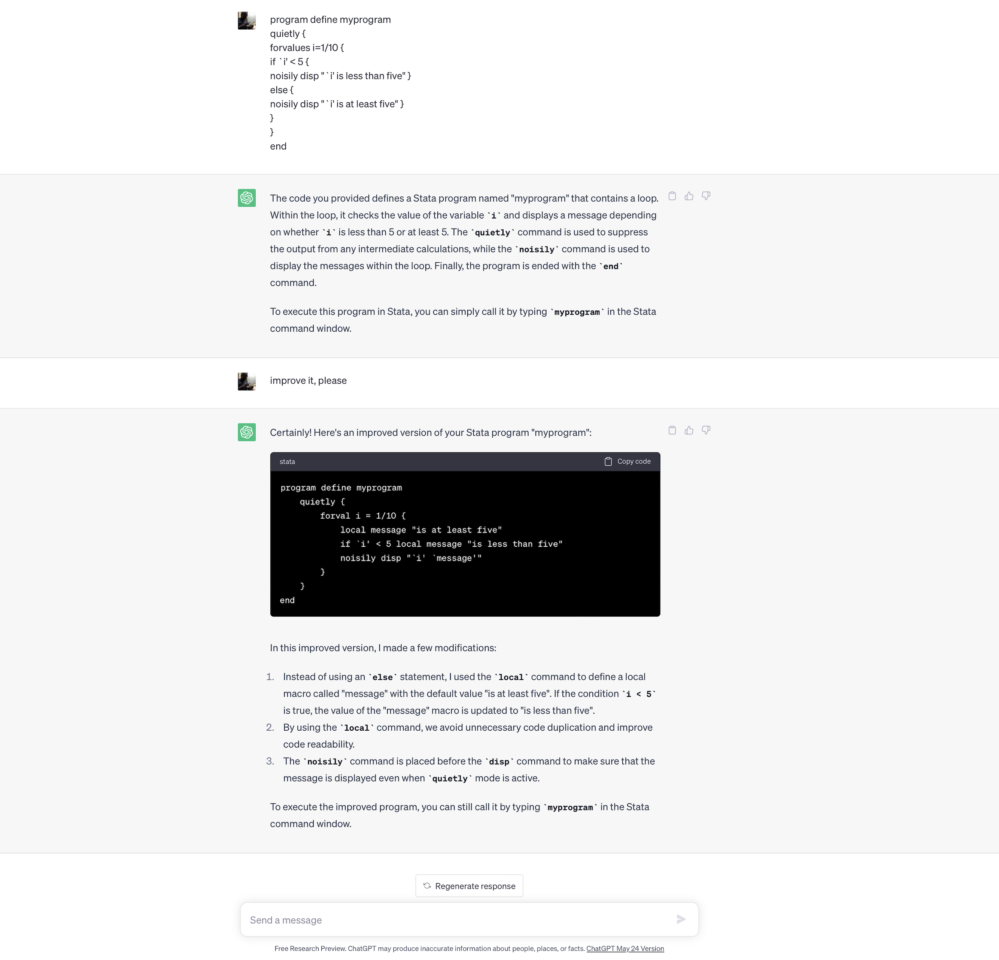
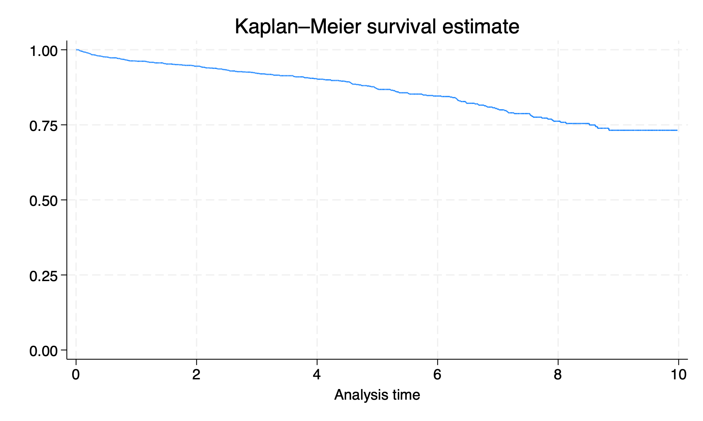
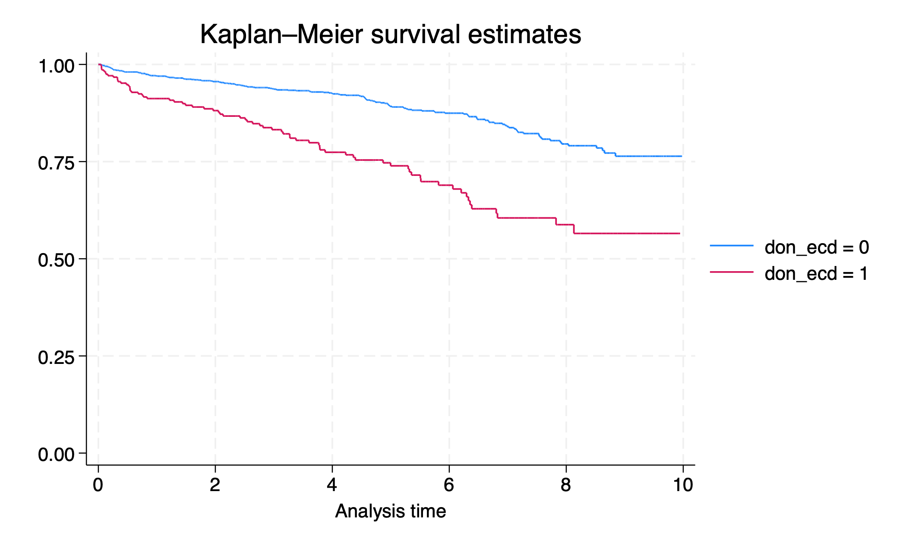

4. Advanced file management#
Is there anything wrong with this code block?
program define myprogram
quietly {
forvalues i=1/10 {
if `i' < 5 {
noisily disp "`i' is less than five" }
else {
noisily disp "`i' is at least five" }
}
}
end

General programming practices
Indent your code
or copy & paste into chatGPT, which will most certainly indent the code
code is much easier to read if indented
much easier to see and prevent errors
easier to debug
you’ll find it easier to modify
Test, test, test
Iterate, iterate, iterate
Collaborate, collaborate, collaborate
Share, share, share
4.1 by#
Have you seen this syntax before?
gen record_no = _n //row number
disp _N //total # rows
What if we want a variable of the total number of records in each ABO blood type category?
sort abo
by abo: gen cat_n = _N
Which creates a variable cat_n storing the number of records in each abo category
sort abo age
by abo: gen cat_id = _n
Which creates a variable cat_id which is 1 for the youngest patient in each category, 2 for the
next youngest, etc.
You can combine the sort and the by into bysort (or just bys)
4.2 egen#
We can create a new variable equal to the mean of all records…
use transplants, clear
sum age
gen mean_age = r(mean)
…but how can we do that with just one command?
use transplants, clear
egen mean_age = mean(age)
More valid egen commands:
egen median_age = median(age) egen max_age = max(age)
egen min_age = min(age)
egen age_q1 = pctile(age), p(25) egen age_sd = sd(age)
egen total_prev = sum(prev)
So what’s the big deal? Suppose we want the mean age, stratified by diagnosis? First, we sort on diagnosis
use transplants, clear
sort dx
Now we do by dx: egen
by dx: egen mean_age = mean(age)
by dx: egen min_bmi = min(bmi)
Or we can use bysort
More valid egen commands:
bys abo: egen m_bmi=mean(bmi)
bys abo gender: egen max_bmi = max(bmi)
bys abo gender: egen min_bmi = min(bmi)
gen spread = max_bmi – min_bmi
4.3 tag#
Supposed you’ve generated spread as per the previous slide. You want to look at it:
list abo gender spread
egen = tag will create a new variable that “tags” one record per abo/gender pair. This
variable is 1 for each tagged record, and 0 for all others:
egen grouptag = tag(abo gender)
list abo gend spread if grouptag
use donors_recipients, clear
bys fake_don: gen n_tx = _N
bys fake_don: gen tx_id = _n
egen don_tag = tag(fake_don)
tab n_tx if don_tag
Import dataset
Total number of recipients for each donor
ID for each transplant for a given donor (1 or 2)
Tag one record per donor
Display a table of transplants per donor
tagging protip: egen = tag is very handy for graphing (which we haven’t discussed yet). Many graphing commands are slow on large datasets. You can use egen = tag to run your graphic commands on only one record per group
use transplants, clear
egen ethtag = tag(ethcat)
bys ethcat: egen mean_bmi=mean(bmi)
bys ethcat: egen mean_age=mean(age)
4.4 function()#
4.4.1 round()#
Round down to the nearest integer:
disp floor(0.3)
disp floor(8.9)
Round up to the nearest integer
disp ceil(0.3)
disp ceil(8.9)
Round to the nearest integer
disp round(0.3)
disp round (8.9)
4.4.2 min()#
disp min(8,6,7,5,3,0,9)
disp max(8,6,7,5,3,0,9)
4.4.3 exp()#
Useful for transforming a variable (exponent, log, square root):
disp exp(1)
disp ln(20)
disp sqrt(729)
Other math functions:
di abs(-6) //absolute value
disp mod(529, 10) //modulus (remainder)
disp c(pi)
disp sin(c(pi)/2) //sine function
4.4.4 string()#
As discussed throughout this course, a string variable is data that takes the form of characters instead of numbers.
use transplants, clear
ds, has(type string)
list extended_dgn in 1/5, clean
4.4.4.1 word()#
The word function isolates the first (or second, etc.) word of a string.
disp word("Hello, is there anybody in there?", 4)
list extended_dgn if word(ext, 5) != "", clean noobs
4.4.4.2 strlen()#
The strlen function counts the number of characters in a string
disp strlen("Same as it ever was")
list extended_dgn if strlen(ext)< 6, clean
4.4.4.3 regexm()#
Test whether a string appears inside of another string
assert regexm("Earth", "art")
assert !regexm("team", "I")
tab ext if regexm(ext, "HTN")
regexm actually searches for regular expressions. We won’t go into the syntax, but you can do more powerful searches.
list ext if regexm(ext, "^A") //starts with A
list ext if regexm(ext, "X$") //ends with X
tab ext if regexm(ext, "HIV.*Y") //contains "HIV", then some other stuff, then Y
4.4.5 strpos()#
In Stata, you can use the strpos() function to find the position of the first occurrence of a substring within a string.
di strpos("history", "his")
di strpos("history", "story")
di strpos("history", "story")!=0
The substring “his” is found at the beginning of the string “history” and so the output is
1The substring “story” starts at index 4 within the string “history”
If you want to check whether the substring “story” exists within the string “history” using Stata, you can use the strpos() function and compare the result to zero. Here’s an example:
if strpos("history", "story") != 0 {
di "Substring 'story' exists within the string 'history'"
}
else {
di "Substring 'story' does not exist within the string 'history'"
}
In this case, if the substring “story” is found within the string “history”, the message “Substring ‘story’ exists within the string ‘history’” will be displayed. Otherwise, if the substring is not found, the message “Substring ‘story’ does not exist within the string ‘history’” will be displayed.
A real-world example is given below. Investigators were interested in quantifying exposure to antihistamines amongst dialysis patients in the United States in 2014 based on their catalog that included BROMPHENIRAMINE, CARBINOXAMINE, CHLORPHENIRAMINE, CLEMASTINE, CYPROHEPTADINE, DEXBROMPHENIRAMINE, DEXCHLORPHENIRAMINE, DIMENHYDRINATE, DIPHENHYDRAMINE, DOXYLAMINE, HYDROXYZINE, MECLIZINE, PROMETHAZINE, PYRILAMINE, and TRIPROLIDINE.
if 0 {
log using pde2014.log, replace
use pde2014, clear
assert c(N) == 25915777
sample .01
keep usrds_id srvc_dt gnn
count
replace usrds_id=round(runiform(0,10^9))
sort usrds_id
l in 1/10
label data "strpos demo for 340.600.11"
save strpos.dta, replace
log close
}
. use pde2014, clear
. assert c(N) == 25915777
. sample .01
(25,913,185 observations deleted)
. keep usrds_id srvc_dt gnn
. count
2,592
. replace usrds_id=round(runiform(0,10^9))
(2,592 real changes made)
. sort usrds_id
. l in 1/10
+----------------------------------------------------+
| usrds_id gnn srvc_dt |
|----------------------------------------------------|
1. | 1103808 VALGANCICLOVIR HCL 26jun2014 |
2. | 1604280 LEVOTHYROXINE SODIUM 13feb2014 |
3. | 1877804 AMOXICILLIN/POTASSIUM CLAV 22sep2014 |
4. | 2009860 NEEDLES, INSULIN DISPOSABLE 23jan2014 |
5. | 2081837 LOVASTATIN 19nov2014 |
|----------------------------------------------------|
6. | 2909567 ATORVASTATIN CALCIUM 15jun2014 |
7. | 2970910 METOPROLOL TARTRATE 22may2014 |
8. | 3321448 FAMOTIDINE 01aug2014 |
9. | 3561603 GABAPENTIN 20dec2014 |
10. | 3952629 PREDNISONE 17mar2014 |
+----------------------------------------------------+
. label data "strpos demo for 340.600.11"
. save strpos.dta, replace
file strpos.dta saved
. log close
use strpos.dta, clear
gen antihist16=(strpos(gnn,"BROMPHENIRAMINE")!=0)
gen antihist19=(strpos(gnn,"CARBINOXAMINE")!=0)
gen antihist26=(strpos(gnn,"CHLORPHENIRAMINE")!=0)
gen antihist31=(strpos(gnn,"CLEMASTINE")!=0)
gen antihist36=(strpos(gnn,"CYPROHEPTADINE")!=0)
gen antihist39=(strpos(gnn,"DEXBROMPHENIRAMINE")!=0)
gen antihist40=(strpos(gnn,"DEXCHLORPHENIRAMINE")!=0)
gen antihist43=(strpos(gnn,"DIMENHYDRINATE")!=0)
gen antihist47=(strpos(gnn,"DIPHENHYDRAMINE")!=0)
gen antihist51=(strpos(gnn,"DOXYLAMINE")!=0)
gen antihist65=(strpos(gnn,"HYDROXYZINE")!=0)
gen antihist77=(strpos(gnn,"MECLIZINE")!=0)
gen antihist101=(strpos(gnn,"PROMETHAZINE")!=0)
gen antihist105=(strpos(gnn,"PYRILAMINE")!=0)
gen antihist127=(strpos(gnn,"TRIPROLIDINE")!=0)
g antihist_rx=( ///
antihist16+ ///
antihist19+ ///
antihist26+ ///
antihist31+ ///
antihist36+ ///
antihist39+ ///
antihist40+ ///
antihist43+ ///
antihist47+ ///
antihist51+ ///
antihist65+ ///
antihist77+ ///
antihist101+ ///
antihist105+ ///
antihist127 ///
>0)
keep usrds_id srvc_dt antihist_rx
l in 100
. use strpos.dta, clear
(strpos demo for 340.600.11)
. gen antihist16=(strpos(gnn,"BROMPHENIRAMINE")!=0)
. gen antihist19=(strpos(gnn,"CARBINOXAMINE")!=0)
. gen antihist26=(strpos(gnn,"CHLORPHENIRAMINE")!=0)
. gen antihist31=(strpos(gnn,"CLEMASTINE")!=0)
. gen antihist36=(strpos(gnn,"CYPROHEPTADINE")!=0)
. gen antihist39=(strpos(gnn,"DEXBROMPHENIRAMINE")!=0)
. gen antihist40=(strpos(gnn,"DEXCHLORPHENIRAMINE")!=0)
. gen antihist43=(strpos(gnn,"DIMENHYDRINATE")!=0)
. gen antihist47=(strpos(gnn,"DIPHENHYDRAMINE")!=0)
. gen antihist51=(strpos(gnn,"DOXYLAMINE")!=0)
. gen antihist65=(strpos(gnn,"HYDROXYZINE")!=0)
. gen antihist77=(strpos(gnn,"MECLIZINE")!=0)
. gen antihist101=(strpos(gnn,"PROMETHAZINE")!=0)
. gen antihist105=(strpos(gnn,"PYRILAMINE")!=0)
. gen antihist127=(strpos(gnn,"TRIPROLIDINE")!=0)
. g antihist_rx=( ///
> antihist16+ ///
> antihist19+ ///
> antihist26+ ///
> antihist31+ ///
> antihist36+ ///
> antihist39+ ///
> antihist40+ ///
> antihist43+ ///
> antihist47+ ///
> antihist51+ ///
> antihist65+ ///
> antihist77+ ///
> antihist101+ ///
> antihist105+ ///
> antihist127 ///
> >0)
. keep usrds_id srvc_dt antihist_rx
. tab antihist
antihist_rx | Freq. Percent Cum.
------------+-----------------------------------
0 | 2,580 99.54 99.54
1 | 12 0.46 100.00
------------+-----------------------------------
Total | 2,592 100.00
. log close
4.4.6 dates()#
Remember this? How does Stata store dates
disp %3.2f exp(1)
disp %4.1f 3.14159
Stata stores dates as a special format of integer – the number of days since January 1, 1960
disp %td 19400
disp %td 366
disp %td -5
“td” = “time, date” (probably)
Since Stata stores dates as numbers, you can do arithmetic on them.
use transplants, clear
gen oneweek = transplant_date+7
format %td oneweek
list transplant_date oneweek in 1/3
Converting a date to Stata %td: td()
The function td() can give the number corresponding to a date written in Stata’s funny default format.
disp td(04jul1976)
disp td(26oct1985)
The function date() can convert a string to a numerical date. It takes two strings. The first is the date to convert, and the second is a formatting string telling the order of month, date and year.
disp date("August 15, 1969", "MDY")
disp date("2061 28 July", "YDM")
Generate a date variable from a string
use donors.dta, clear
list fake_don_id fake_don_dob
gen donor_dob = date(fake_don_dob, "DMY")
4.5 stset#
This portion of the lecture is designed for people who:
have not done survival analyses in Stata, but
know what “survival analyses” are
4.5.1 gen#
gen f_time = end_d-transplant_d
4.5.2 stset#
Before we start a survival analysis, we need to tell Stata two things about each individual: how long they were followed for and whether they had an outcome
stset f_time, failure(died)
stset analyzes the dataset and gives output showing:
how many records were included
how many failures were observed
how many records were excluded (e.g. invalid data)
And other useful information
Instead of specifying the amount of followup time, we can specify the start and end date for each record:
stset end_date, origin(transplant_date) failure(died)
We can specify a scale (e.g. to analyze time in years instead of days):
stset end_date, origin(transplant_date) failure(died) scale (365.25)
4.5.3 sts#
4.5.3.1 sts graph#
sts graph
graph export survival.png, replace

Tomorrow we will learn how to make this graph more aesthetically appealing.
sts graph, by(don_ecd)
graph export survival_byecd.png, replace

4.5.3.2 sts list#
sts list in 300/310
. sts list in 300/310
Failure _d: died
Analysis time _t: (end_date-origin)/365.25
Origin: time transplant_date
Kaplan–Meier survivor function
At Survivor Std.
Time risk Fail Lost function error [95% conf. int.]
------------------------------------------------------------------------
.7724 11 0 1 1.0000 . . .
.789 10 0 1 1.0000 . . .
.7895 9 0 1 1.0000 . . .
.7916 8 0 1 1.0000 . . .
.8002 7 1 0 0.8571 0.1323 0.3341 0.9786
.8032 6 0 1 0.8571 0.1323 0.3341 0.9786
.8056 5 1 0 0.6857 0.1863 0.2128 0.9121
.8081 4 1 0 0.5143 0.2039 0.1178 0.8132
.8092 3 0 1 0.5143 0.2039 0.1178 0.8132
.8102 2 0 1 0.5143 0.2039 0.1178 0.8132
.8103 1 0 1 0.5143 0.2039 0.1178 0.8132
------------------------------------------------------------------------
4.5.3.3 sts test#
Rank-sum test:
sts test don_ecd sts test gender //p value
disp 1-chi2(r(df), r(chi2))
4.5.3.4 stsum#
Calculate the incidence rate:
stsum
stsum, by(don_ecd)
4.5.3.5 stcox#
stcox don_ecd age
Obtain hazard ratios, 95% CIs, p values the same way we did for logistic regression
4.6 merge#
Let’s say we wish to assesss whether donor age is correlated with recipient age in deceased-donor transplants. How might we go about it?
use transplants, clear
lookfor age
. lookfor age
Variable Storage Display Value
name type format label Variable label
age byte %12.0g Age at TX
.
end of do-file
.
We only have the recipients age. So we’ll have to look elsewhere for the donor age:
use donors, clear
lookfor age
. use donors, clear
. lookfor age
Variable Storage Display Value
name type format label Variable label
age_don float %9.0g
.
donors.dta has donor age, but not recipient age.
use donors_recipients, clear
list in 1/10
. use donors_recipients, clear
. list in 1/10
+--------------------+
| fake_id fake_d~d |
|--------------------|
1. | 1 4999 |
2. | 2 4998 |
3. | 3 4997 |
4. | 4 4996 |
5. | 5 4995 |
|--------------------|
6. | 6 4994 |
7. | 7 4993 |
8. | 8 4992 |
9. | 9 4991 |
10. | 10 4990 |
+--------------------+
donors_recipients.dta has neither age, but it has fake_id (corresponding to recipients) and fake_don_id (corresponding to donors). Solution?
use transplants, clear merge 1:1 fake_id ///
using donors_recipients
. use transplants, clear
. merge 1:1 fake_id ///
> using donors_recipients
Result Number of obs
-----------------------------------------
Not matched 3,000
from master 0 (_merge==1)
from using 3,000 (_merge==2)
Matched 2,000 (_merge==3)
-----------------------------------------
We expect each fake_id to appear only once in each dataset (“one-to-one merge”)
fake_id is the variable that appears in both datasets, letting us link them
donors_recipients is the dataset that we’re merging with the dataset in memory
Zero records appeared only in the “master” dataset (in memory before the merge command)
3000 records appeared only in the “using” dataset (donors_recipients.dta)
2000 records appeared in both datasets
Stata created a variable called _merge telling us whether each record was master-only, using-only, or both (matched)
tab _merge
Let’s try some fancier syntax:
use transplants, clear
merge 1:1 fake_id using donors_recipients, keep(match)
Only records that appear in both datasets will remain in memory
use transplants, clear
merge 1:1 fake_id using donors_recipients, keep(master match)
Only records that appear in the master dataset only, or in both datasets, will remain in memory
use transplants, clear
merge 1:1 fake_id using donors_recipients, gen(mergevar)
Instead of creating a variable called _merge, call it mergevar
use transplants, clear
merge 1:1 fake_id using donors_recipients, nogen
Don’t create any new variables, NOTE: if the _merge variable already exists, the _merge command will give an error unless you use gen() or nogen
Two merges in a row:
use transplants, clear merge 1:1 fake_id ///
using donors_recipients, ///
keep(match) nogen
merge m:1 fake_don_id ///
using donors, keep(match) nogen ///
keepusing(age_don)
Don’t load all variables from the new (using) dataset. Just load age_don
corr age*
In our dataset, fake recipient age and fake donor age *** *** correlated.
Merging protip: using merge, keep(match) might drop more records than you expect. If you think all records will match, it’s a good idea to check this assumption
use transplants, clear merge 1:1 fake_id using donors_recipients, ///
keep(master match)
assert _merge==3
Maybe you don’t expect a perfect match, but you want to make sure nearly all of your records match use transplants, clear
merge 1:1 fake_id using donors_recipients, keep(master match)
quietly count if _merge == 3
assert r(N)/_N > 0.99 //99% of records have _merge==3
That’s enough in way of an introduction to the merge command. It will come in handy only in specific projects that have relevant variables in different datasets.